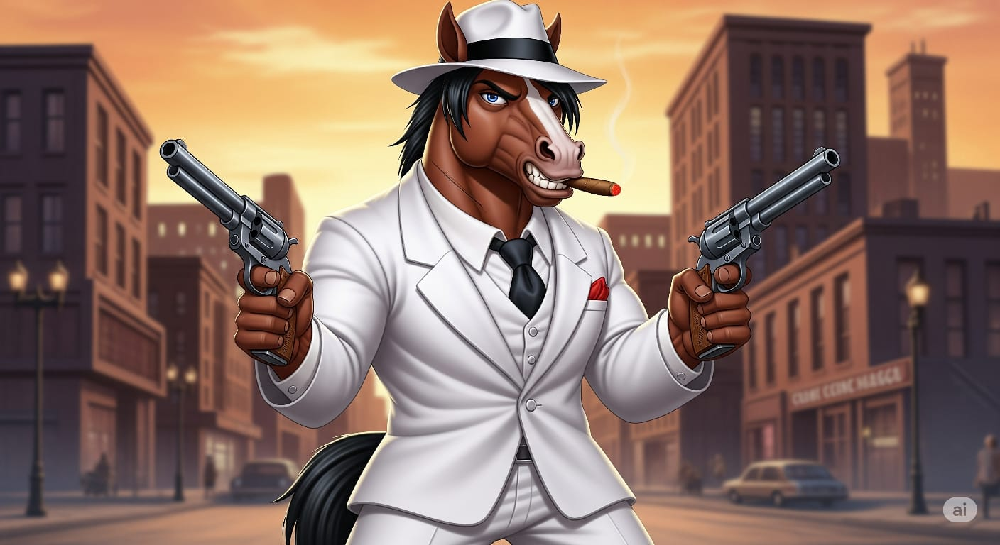
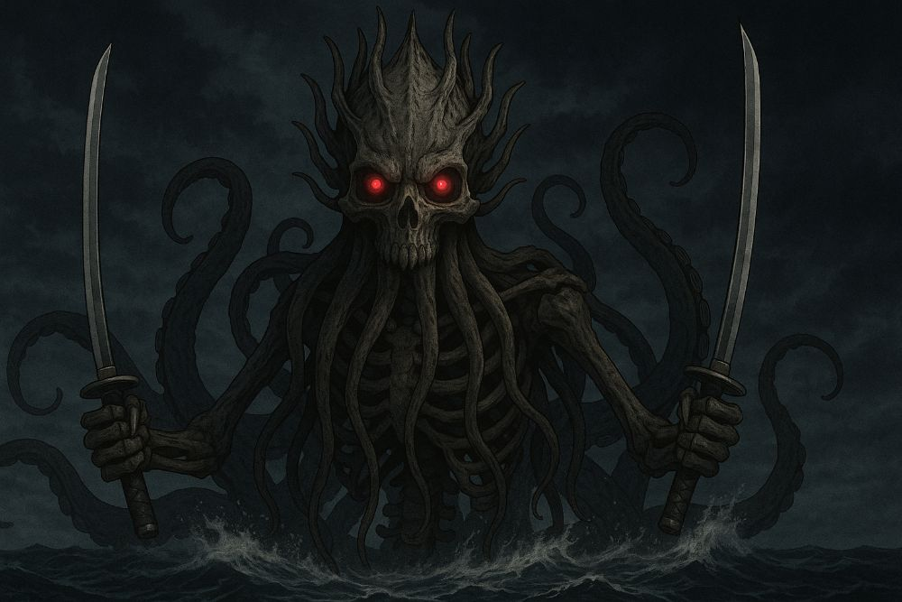
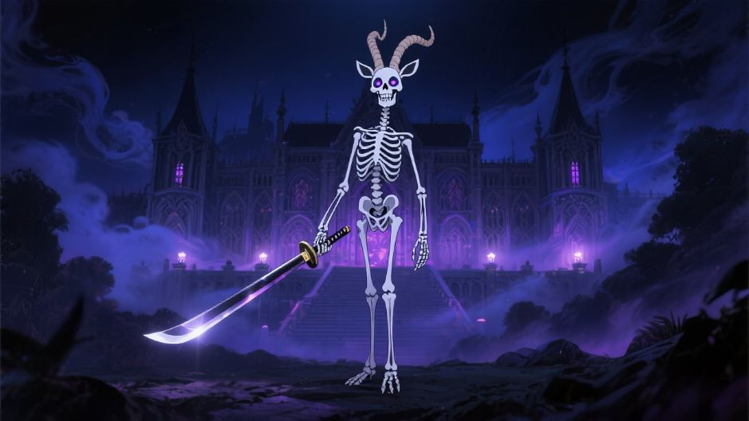
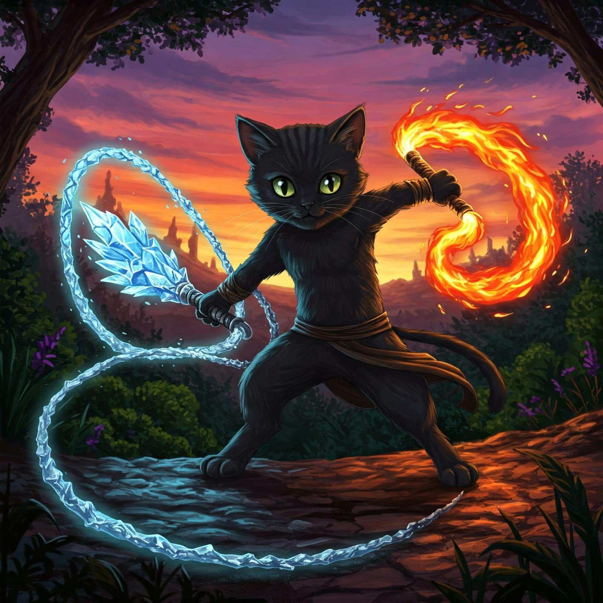
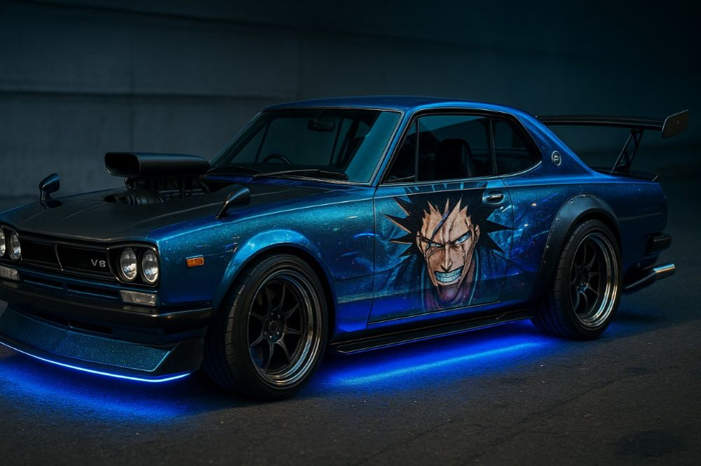
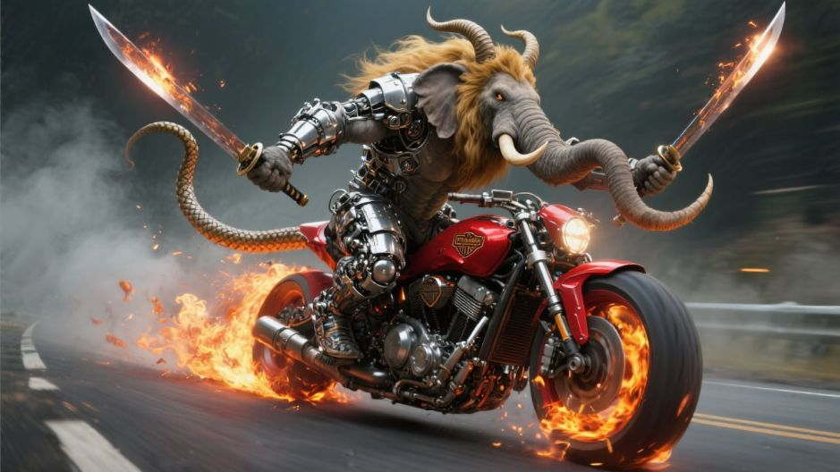
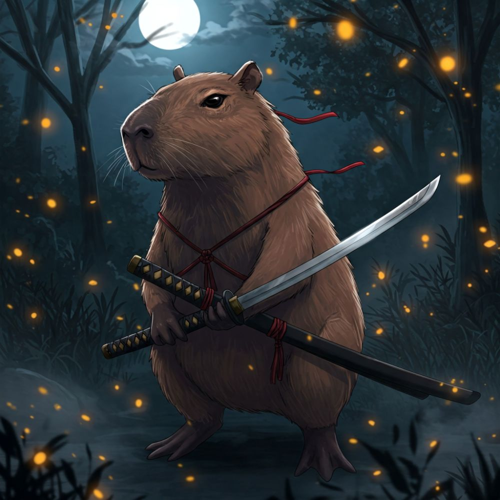
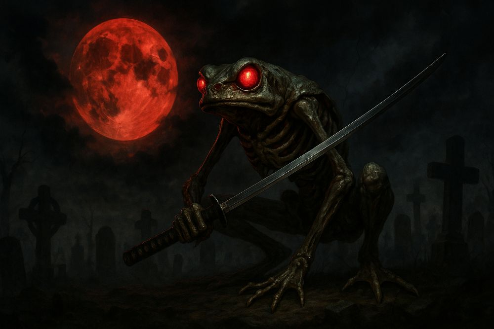
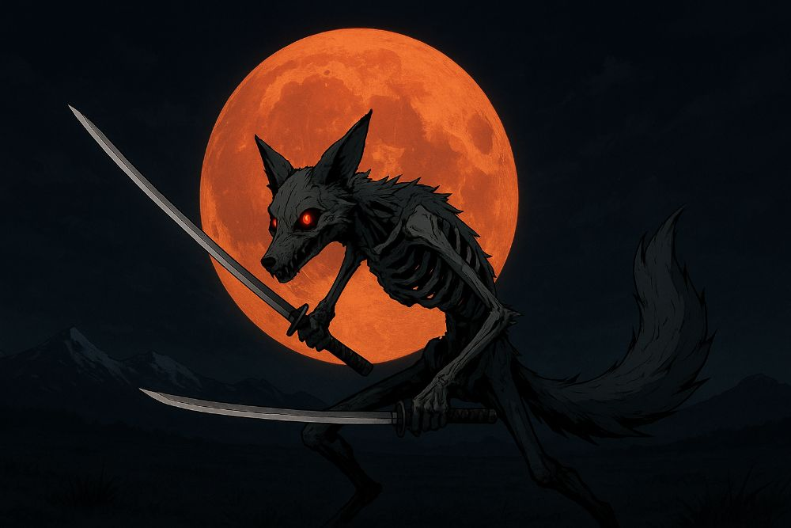
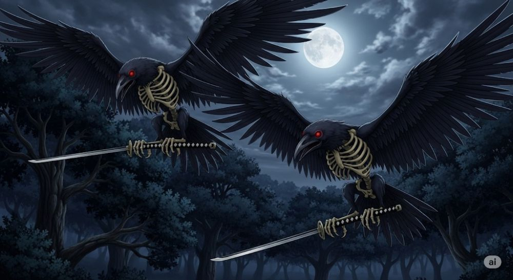

Innovación en Diseño Digital
Trabajo con modelos de inteligencia artificial para crear concept art, personajes y escenas imposibles de encontrar en bancos de imágenes tradicionales. Combino prompt engineering avanzado, dirección artística y refinamiento iterativo para lograr resultados consistentes y utilizables en proyectos de ilustración, branding, contenido para redes y piezas experimentales.
Midjourney
DALL-E
Stable Diffusion
Adobe Firefly
Galería de Creaciones
Selección curada de criaturas fantásticas, vehículos concept, arquitectura reimaginada e híbridos creativos, junto con piezas en video generadas con IA. Cada obra parte de un prompt cuidadosamente diseñado y múltiples iteraciones.









